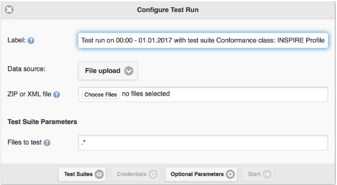
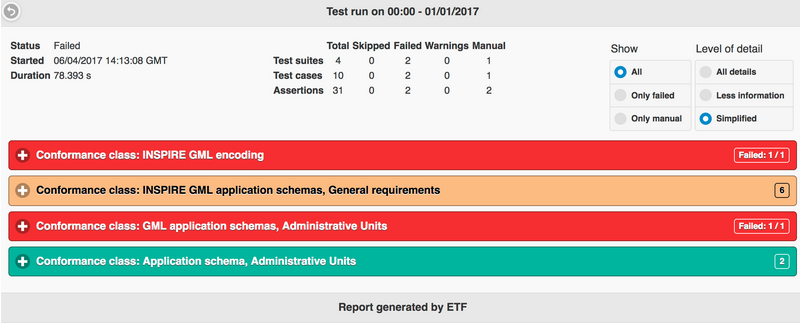
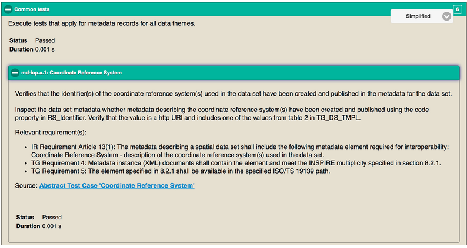

Guida rapida ETF¶
Nota
Questo progetto è incluso solo nel disco della macchina virtuale (VMDK) OSGeoLive
ETF è un framework di test open source per la validazione di dati spaziali, metadati e servizi web nelle Infrastrutture di Dati Spaziali (IDS). Il progetto ETF è guidato da tre obiettivi: essere facile da usare, coerente con gli standard e in grado di testare tutte le risorse di una SDI.
Questa Guida Rapida descrive come:
navigare nell’applicazione web
iniziare un test
monitorare un test in esecuzione
leggere e gestire i report dei test
Contenuti
Introduzione¶
Dal menu Start dell’OSGeoLive, seleziona . L’applicazione si avvierà dopo qualche istante ed aprirà una pagina all’indirizzo http://localhost:9090/ETF
Nell’intestazione c’è un menu con 4 sezioni, corrispondenti ciascuna a visualizzazioni e funzionalità diverse:

La prima è Start test. In questa sezione sono elencate tutte le Suite di Test Eseguibili che sono disponibili (ovvero installate). In questa sezione, si può selezionare una Suite di Test Eseguibile ed eseguirla rispetto ad un Oggetto di Test.
La seconda è Status. Questa sezione mostra tutti i test che sono al momento in esecuzione sul sistema e consente di aprire una finestra di monitoraggio per i singoli test in esecuzione per verificare lo stato di ciascuno. Al di sotto dei test in esecuzione, questa sezione mostra inoltre le componenti al momento caricate.
La terza è Test reports. In questa sezione si possono verificare, analizzare in dettaglio e scaricare i risultati di ogni test completato.
La quarta è Help. Questa sezione contiene un link alla documentazione, in cui sono disponibili guide su come usare tutte le funzionalità di ETF.
Iniziare un test¶
Selezione della Suite di Test¶
La pagina mostra le Suite di Test Eseguibili che sono disponibili.

Maggiori informazioni su una Suite di Test sono disponibili cliccando il pulsante +.

Queste informazioni:
Includono una descrizione della Suite di Test.
Possono includere un link a una Suite di Test Astratta (sorgente) dalla quale è derivata la Suite di Test Eseguibile.
Possono includere le dipendenze della Suite di Test, che vengono anch’esse automaticamente eseguite insieme alla Suite di Test durante un Test Run (classi di conformità di prerequisito).
Possono includere il nome dei Tag associati, usati per raggruppare le Suite di Test nella vista.
Includono il nome dei Tipi di Oggetti di Test applicabili (spiegati nella sezione successiva).
Includono informazioni generali come versione, autore e ultimo editore, date di creazione e di modifica.
Per iniziare un Test Run, occorre selezionare una Suite di Test con un click sul pulsante di switch use sul lato destro.

Quando almeno una Suite di Test è selezionata, apparirà un pulsante Start.
Ogni Suite di Test si applica esclusivamente a specifici Tipi di Oggetti di Test, elencati nella descrizione. Per un singolo Test Run si possono selezionare molteplici Suite di Test, ma tutte devono essere applicabili allo stesso Tipo di Oggetto di Test. Una volta selezionata una Suite di Test, il pulsante di switch di qualsiasi altra Suite di Test applicabile a diversi Tipi di Oggetti di Test sarà disattivato.

Una Suite di Test può dipendere da altre Suite di Test. Tali dipendenze sono contenute nella descrizione delle Suite di Test e sono automaticamente eseguite durante il Test.
Cliccando sul pulsante Start, si aprirà una nuova finestra che chiede all’utente la risorsa da testare.
Configurazione del Test Run¶
Il campo Label è obbligatorio ed è automaticamente preimpostato con l’orario corrente e i nomi delle Suite di Test selezionate. Questa etichetta, che sarà visualizzata nella sezione Test reports, può essere modificata in modo da aiutare a ritovare il report del test dopo la sua esecuzione.
Lo stile della finestra può dipendere dalle Suite di Test selezionate.
Test basati su file¶
I seguenti elementi vengono visualizzati quando sono state selezionate Suite di Test che testano uno più file di dati di test.
Selezionando File upload come Data source, è possibile selezionare uno o più file locali e caricarli su ETF. ETF accetta solo file con estensioni XML e GML, oppure file ZIP che includono questi due tipi di file.
Nota
Altri file, come file di definizione dello schema, non possono essere utilizzati e vengono silenziosamente ignorati da ETF!
La dimensione massima del file caricabile viene visualizzata quando si sposta il mouse sul punto interrogativo.
Se i dati che si vogliono testare sono disponibili sul web, è possibile testarli fornendo un singolo URL. Selezionando Remote file (URL) come Data source, è possibile inserire un Remote URL a un singolo file XML, GML o ZIP.

Se l’URL richiede l’autenticazione, è possibile fornire nome utente e password facendo clic su Credenziali.

Test di servizi¶
I seguenti elementi vengono visualizzati quando sono state selezionate Suite di Test che testano un servizio.
É necessario inserire il Service URL che inizia con http:// or https://.

Se il servizio richiede l’autenticazione, è possibile fornire nome utente e password facendo clic su Credenziali.
Dipendenze e Parametri¶
Il pulsante Test Suites mostra alcune informazioni di base sulle Suite di Test selezionate e - se applicabile - sulle loro dipendenze dirette.

Se il Test accetta parametri, questi sono visualizzati nella sezione Test Suite Parameters. I parametri opzionali si possono visualizzare cliccando sul pulsante Optional Parameters. Muovendo il mouse sul punto di domanda, viene visualizzata una descrizione dei parametri.
Nota
Nella maggior parte dei casi è possibile utilizzare i valori preimpostati.

Il test si può finalmente lanciare cliccando il pulsante Start. La vista passa automaticamente alla finestra Monitor Test Run.
Monitorare un test in esecuzione¶
Una volta lanciato un Test Run viene visualizzata la finestra Monitor Test Run.

La barra blu indica l’avanzamento.

L’area della console mostra informazioni e messaggi sui risultati del test. Il Test Run può essere cancellato cliccando sul pulsante Cancel.
La finestra può essere chiusa, ad esempio tramite il pulsante X nell’angolo in alto a sinistra. Anche se il browser viene chiuso, l’esecuzione del Test Run continua sul server.
Per riaprire la finestra Monitor Test Run dopo che è stata chiusa, seleziona la sezione Status dalla barra dei menu. La sezione Status mostra tutti i test in esecuzione. Un click sul Test Run di interesse aprirà la finestra Monitor Test Run di quel Test Run.

Quando un Test Run è concluso mentre la finestra Monitor Test Run è aperta, il report del test viene automaticamente mostrato.
Report del test¶
La sezione Test Reports mostra tutti i report generati dai Test Run.

Cliccando sul pulsante + vengono mostrate le informazioni del Test Run, il tempo di inizio, il risultato del test, il nome dell’Oggetto di Test e le Suite di Test utilizzate.
Il report di un test può essere aperto nuovamente cliccando sul pulsante Open report, oppure può essere scaricato come file HTML cliccando sul pulsante Download report.
Il file di log del Test Run può essere ispezionato tramite il pulsante Open log. Cliccando infine sul pulsante Delete report, il report viene cancellato in modo permanente.
Ispezionare i report dei test¶
La parte superiore del report di un test mostra informazioni generali, tra cui il risultato complessivo del test, il tempo di inizio, la durata e una tabella che riassume lo stato di tutti i test a diversi livelli.
I report dei test sono interattivi. Il pulsante di switch Show può essere usato per filtrare solo i test falliti (Only failed) o solo i test manuali (Only manual). L’opzione All disattiva il filtro.
Si può utilizzare il pulsante di switch Level of detail per mostrare più o meno informazioni nei report.

I risultati dei test sono riassunti gerarchicamente in un report. Al livello superiore si trovano le Suite di Test.
Cliccando su una Suite di Test, vengono mostrati una descrizione e tutti i test al livello più basso inclusi in quella Suite di Test. Gli errori in una Suite di Test sono immediatamente riconoscibili dal colore rosso. Il numero di test falliti viene mostrato nell’angolo in alto a destra.

Il colore verde indica un test superato. I test superati che richiedono ulteriori test manuali (test che non è possibile automatizzare) sono colorati di arancione. Il colore arancione può anche indicare un test che è stato saltato in quanto dipende da un altro test che è fallito. Lo stato esatto si trova al di sotto della descrizione.
Il numero di livelli dipende dall’Oggetto di Test testato. Se sono stati eseguiti test di un servizio, la gerarchia è la seguente:
Suite di Test Eseguibili
Test Modules (che raggruppano Test Cases)
Test Cases (che raggruppano Test Steps)
Test Steps (interazioni col servizio, che raggruppano Test Assertions)
Test Assertions (test atomici)
Nel test di un file, i Test Modules e i Test Cases non esistono e non sono visualizzati nel report.
Ogni test elenca i requisiti e fornisce una descrizione di come questi vengono testati. Il test può includere un link a una Suite di Test Astratta da cui il test è stato derivato (Source).
Le Assertions corrispondono alle interrogazioni di test atomici al livello più basso. Le Assertions fallite, di colore rosso, visualizzano messaggi di errore nella sezione Messages.

Alcune informazioni utili si possono trovare al livello immediatamente superiore, come ad esempio la risposta di un servizio al livello Test Step (si noti il link Open saved response nel report).

Risorse¶
Utilizzando le istruzioni fornite in questa guida, è possibile testare con ETF il seguente insieme predefinito di risorse:
Dataset GML: alcuni dataset predefiniti sono scaricabili da qui.
Servizi WMS: un elenco di servizi è disponibile qui.
Servizi WFS: un elenco di servizi è disponibile qui.
Nota
Alcuni dei dataset GML forniti sopra non superano tutti i test, quindi puoi provare a correggerli (in base agli errori segnalati nei report dei test) prima di validarli nuovamente, fino a quando tutti i test risulteranno superati.
What next?¶
Questa è soltanto una breve panoramica di ETF. Maggiori informazioni sono disponibili nell’installazione di demo e nell”ETF GitHub space.
Si prega di controllare anche: